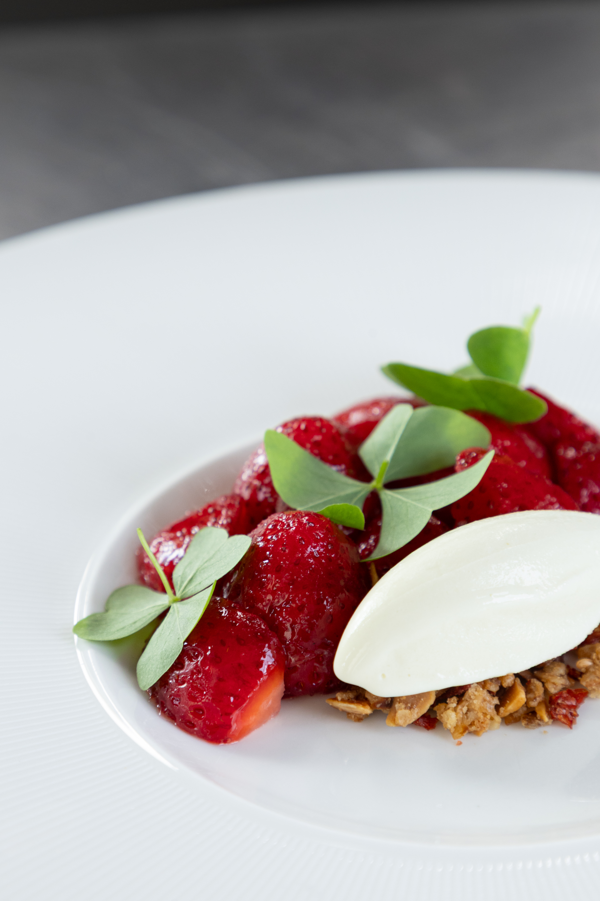
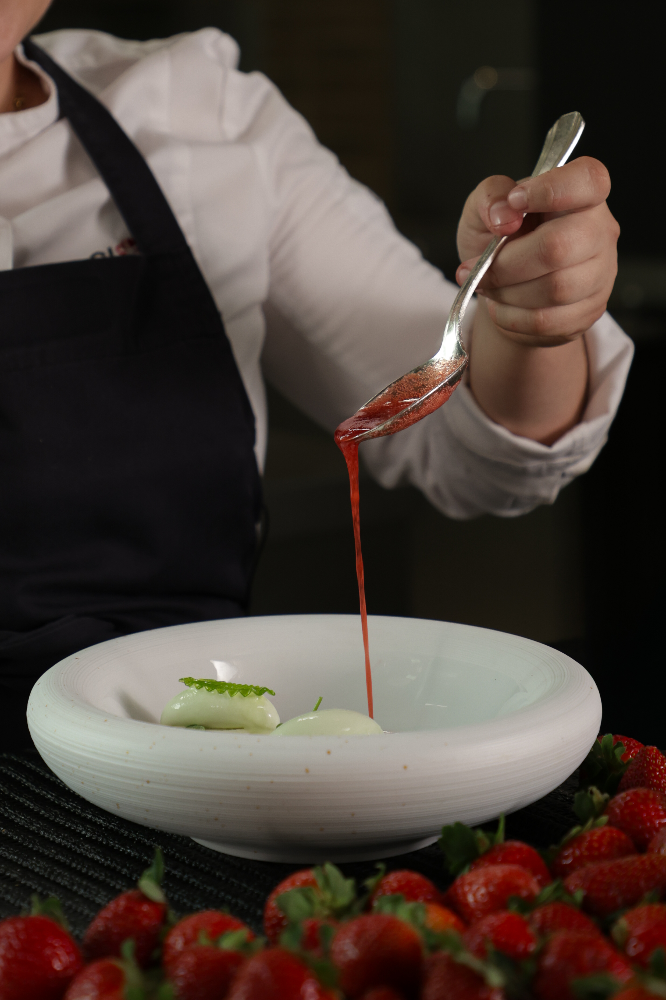
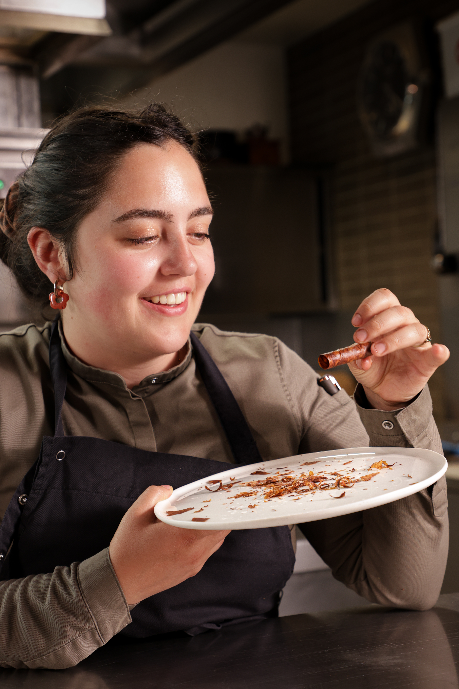
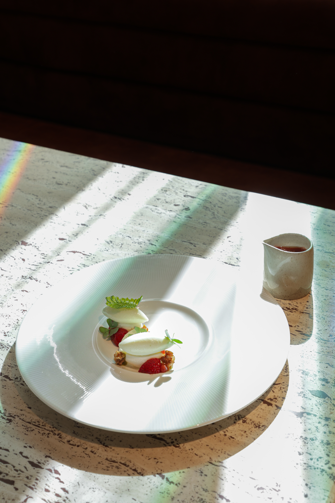
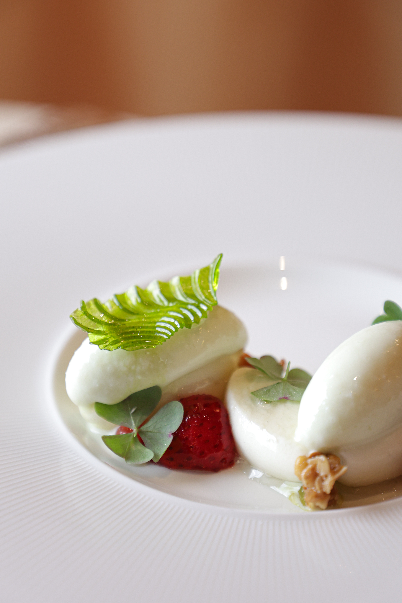
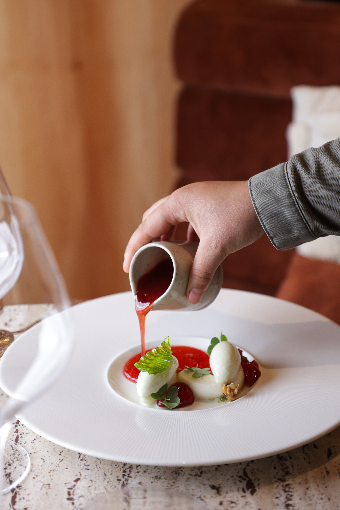
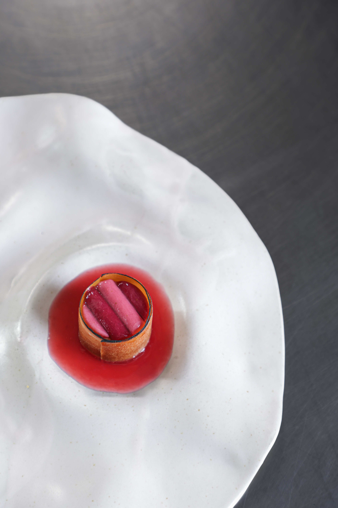

Manon Gouin
Manon Gouin est cheffe pâtissière au restaurant étoilé Mallory Gabsi, à Paris. À seulement 25 ans, ses créations puisent dans ses racines provençales et une expérience en Norvège pour oser des associations de saveurs étonnantes, mêlant fermentation, produits d'exception et gourmandise assumée. Lauréate du prix Lebey 2024 et du prix Michelin x Valrhona Passion Dessert 2025, elle signe des desserts guidés par l'émotion autant que par la technique.






